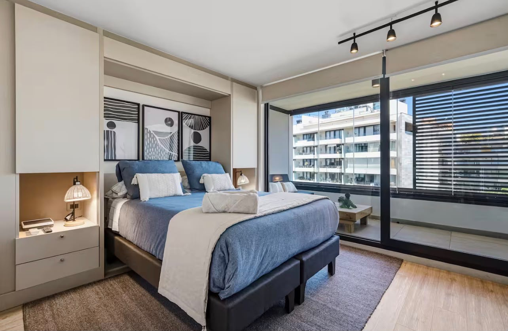

Anfitriones Airbnb
Definimos el estándar de tu propiedad en una reunión y de ahí en adelante solo llega la fecha. Cada limpieza te llega con fotos antes de que entre el huésped.
- Los 7 días de la semana, entre check-out y check-in
- Listado de entrega definido para tu propiedad
- Entre 8 y 10 fotos de cada limpieza, antes del check-in
- Lavado de ropa de cama y control de amenities: te avisamos antes de que falten
- Aviso de daños u objetos olvidados el mismo día